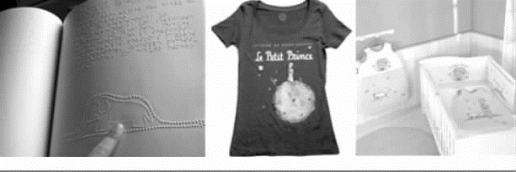
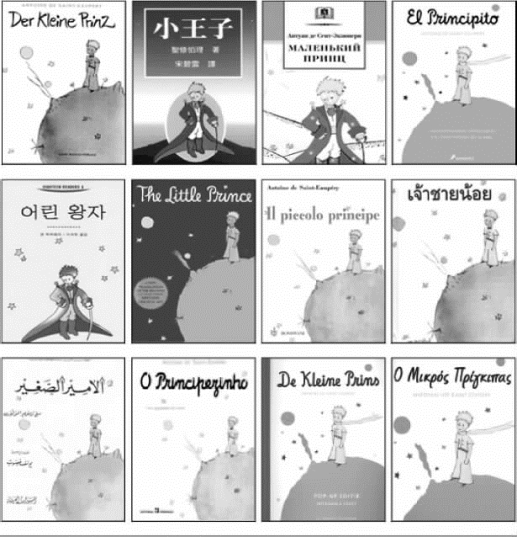
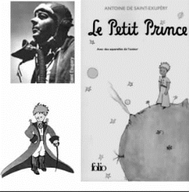

11 给《与小王子遨游不同的数学世界》读者的信
每一个人都有自己的星星，但其中的含意却因人而异。对旅人而言，星星是向导；对其他人而言，它们只不过是天际中闪闪发光的小东西而已；对学者而言，星星则是一门待解的难题；对我那位商人来说，它们就是财富。不过，星星本身是沉默的。你，只有你，了解这些星星与众不同的含义……
——圣·埃克苏佩里《小王子》
如果你爱着一朵盛开在浩瀚星海里的花，那么，当你抬头仰望繁星时，便会感到心满意足。
——圣·埃克苏佩里《小王子》
成人们对数字情有独钟。如果你为他们介绍一个朋友，他们从不会问你“他的嗓子怎么样？他爱玩什么游戏？他会采集蝴蝶标本吗？”而是问“他几岁了？有多少个兄弟？体重多少？他的父亲挣多少钱？”他们认为知道了这些，就了解了这个人。
——圣·埃克苏佩里《小王子》
真正重要的事物，用肉眼是看不见的。只有用心，才能看得清楚。
——圣·埃克苏佩里《小王子》中狐狸对小王子说的一个秘密，再简单不过的秘密。
法国有一本著名的儿童故事书叫《小王子》（Le petit prince，有中译本），这里面有一个天真无邪的小孩子名叫“小王子”。许多国家的儿童都知道他的故事。书被译成260多种语言，电影、唱片、衣服甚至纸币上都可以看到这本书的影子。可惜作者安东尼· 圣· 埃克苏佩里（Antoine de Saint-Exupéry，1900—1944）于1942年创作这故事之后，却因在1944年7月31日执行一次飞行任务时失踪。从此没有新的“小王子”的故事出现。在他逝世50周年时，法国人将他与小王子的形象印在50法郎的钞票上。

《小王子》的盲人读本，印有《小王子》的衣服和婴儿床垫
圣·埃克苏佩里还自己为小说画了插图，小王子的形象风靡全世界。
在《数学和数学家的故事》第3册中，我曾经和小王子一起，帮助一个星球的国王和王子解决领土分配的问题。在那之后，我就没有和小王子再碰过面。

《小王子》被译成260多种语言
法国人将圣·埃克苏佩里与小王子的形象印在50法郎的钞票上
就像书中所说的：“因为忘记自己的朋友是一件悲哀的事情，并不是每个人都有朋友，如果我忘记了小王子，那我就会变得和那些除了对数字感兴趣，对其他事都漠不关心的大人们一样了。”
2016年夏天的一个黄昏，我去家附近的挖石矿湖上的平台看书，看圣·埃克苏佩里的《小王子》，想要忘记内心中曾因身体等原因被迫放弃写书和研究论文的巨大悲伤。

圣·埃克苏佩里和他画的小王子
手里拿着书看着看着，我似乎听到了小王子开口与我说话：“你知道的……当一个人觉得非常悲伤时，他总是喜欢看日落。感到悲伤……”
“我前几年写的书稿和研究论文及资料都没有了。我无法再拖着这个身体前行，太重了。”
“不要自暴自弃，至少你的工作是有意义的。当人们打开你的书，就像是让一颗新的星星或者一朵花诞生。这些星星闪闪发亮，是不是为了让每个人将来有一天都能重新找到自己的星球？”
“如果有人爱上了在这亿万颗星星中独一无二的一株花，当他看着这些星星的时候，这就足以使他感到幸福。”
这次和小王子精神上的交流，使我下决心要继续以传奇色彩的“小王子”为主角，和读者们一起探索神秘有趣的数学世界。
那个发现万有引力的牛顿在临终时说过这样的话：“我不知道世人怎样看我，但我自己却以为我是在未知真理的大海前面，在海滩上拾一些光滑的石块或者美丽的贝壳就引以为乐的小孩……”到海滩的人兴高采烈地捡着目迷五色、构造千奇百怪的各种贝壳，却是很容易从中领会这种事物之间复杂、变化的道理的。
记得钱学森2005年3月29日下午在301医院谈科技创新人才的培养：“今天我们办学，一定要有加州理工学院的那种科技创新精神，培养会动脑筋、具有非凡创造能力的人才……所谓优秀学生就是要有创新。没有创新，死记硬背，考试成绩再好也不是优秀学生。我们不能人云亦云，这不是科学精神，科学精神最重要的就是创新。”
我希望，我的文字能够像星星一样，可以在某个读者心中闪亮一下，带给他们一点灵感，启迪他们的想象和创新。我认为比学习知识更重要的是思维方式，希望学生把目光从数学课本里抬起来，我会介绍一些大师思考解决问题的方法。要理解费解的数学理论相当不容易，为了传授效果好，叙述尽量深入浅出。
此外，各位读者放心：尽管数学在许多人眼里是艰难费解，但我在这里不会使用晦涩难懂的理论平铺直叙来吓唬住你们。我会利用一些历史故事将复杂的学术、理论讲清楚，引导你们进行相关的数学思维，来启发解决数学问题，希望会收到事半功倍的效果。
写《时间简史》的英国著名黑洞学家霍金说：“我的出版商告诉我，如果在书中使用一个方程式，就会吓走一半读者。”因此他在《时间简史》这书中只写一个公式E ＝mc2。
而我这数学童话书是描述世界各民族数学发展的历史故事，要讲到算数、代数、三角、几何还有近代较高深的数学，不可避免地会出现各种各样的公式和数学符号。如果根据霍金出版商的理论，我的读者群的数目不只是下降，还可能将出现负数的情况。但是我的书中的方程式，不是枯燥难懂的符号，却是趣味无穷而富含奥秘的图画。不是每个人都喜欢读方程式，但是我相信，每个人都会喜欢看富含趣味和智慧的图画。
我就是要写出这么一本带有回忆录色彩的科普书，像《爱丽丝漫游仙境》，不管男女老少、学识深浅，每个人都有适合阅读的内容。有趣，有图，有历史故事，有智慧奥秘，用一场快速的时光穿梭，追溯千百年的数学足迹，介绍数学家不屈不挠的探索真理的精神，而且还有一些我的数学猜想。里面还有我为了训练几个高中生做数学研究编写的有挑战性的故事，他们在阅读之后运用“猜想—验证”的方法来探究一些未知的规律，可以找到一些新的数学定理。只要你有一点点耐心，你一定可以看懂。
2 500多年前，《群书治要·孔子家语》就有记载：有一天，鲁国国君鲁哀公问孔子，向东扩展宫殿是不吉利的事，有没有这回事呢？孔子说，我听说天下有五种不祥的事：“损人而自益，身之不祥也（损人益己，会给自身招来不祥之祸）；弃老而取幼，家之不祥也（放弃了老人不去赡养，不去关心，不去照顾，把所有的关爱都放在孩子身上，这个家庭就不吉祥了）；释贤而用不肖，国之不祥也（把贤德的人都放任了，任用的全是不肖之徒，这是国家的不吉利）；老者不教，幼者不学，俗之不祥也（老年人不愿意教年轻人了，幼年人不愿意向老年人学习，这是风俗的不吉祥）；圣人伏匿，愚者擅权，天下不祥也（圣贤的人、有智慧的人、有德行的人，都隐居起来了，而笨蛋专权揽权，骄横跋扈，这是天下的不吉利）。”孔子告诉鲁哀公，从自身到天下，有这样的五种不祥事才是你身为掌权者该注意的，而向东扩展宫殿并不包括在其中。
我期待这本书是不落窠臼、充满创造力和想象力的作品，能让你唤起对有趣的科学知识的好奇心，提高逻辑推理能力、开启丰富生命的辽阔视窗，就像书里的外星教授希望地球上的孩子能把眼睛从周围狭小的环境移向辽阔浩瀚的星空，以后成为真理的探索者不懈追寻和探索。
希望这是你喜欢，以及你的孩子也喜欢的读起来生动有趣的书。可惜华罗庚先生和赵元任先生已去世，看不到这书。读者若想和我联系，务请发e-mail至：（1）lixueshu18＠163．com；（2）lixueshu18＠sina．com，也希望这书能像清朝张维屏（1780—1859）的诗《新雷》：
“造物无言却有情，每于寒尽觉春生。
千红万紫安排著，只待新雷第一声。”
最后的润色和校对工作花很多时间，我没法再做任何研究，希望这本书像一声新雷，引来万紫千红中国少年科幻文学的春天。就算我去世一百年两百年后，仍将会是人们爱不释手的读本。想让初学者了解数学的主题、方法与目的为主，培养爱好者发现问题、关注问题以及反思问题的能力。若能按照次序认真读完三分之二，便能对数学产生兴趣，有所领悟，便会自觉主动、迫不及待地自己去搜寻更多的数学书籍阅读，提供一些研究问题。
所以，现在就请您打开书本，跟着小王子一起遨游梦幻神秘而趣味无穷的数学世界吧。